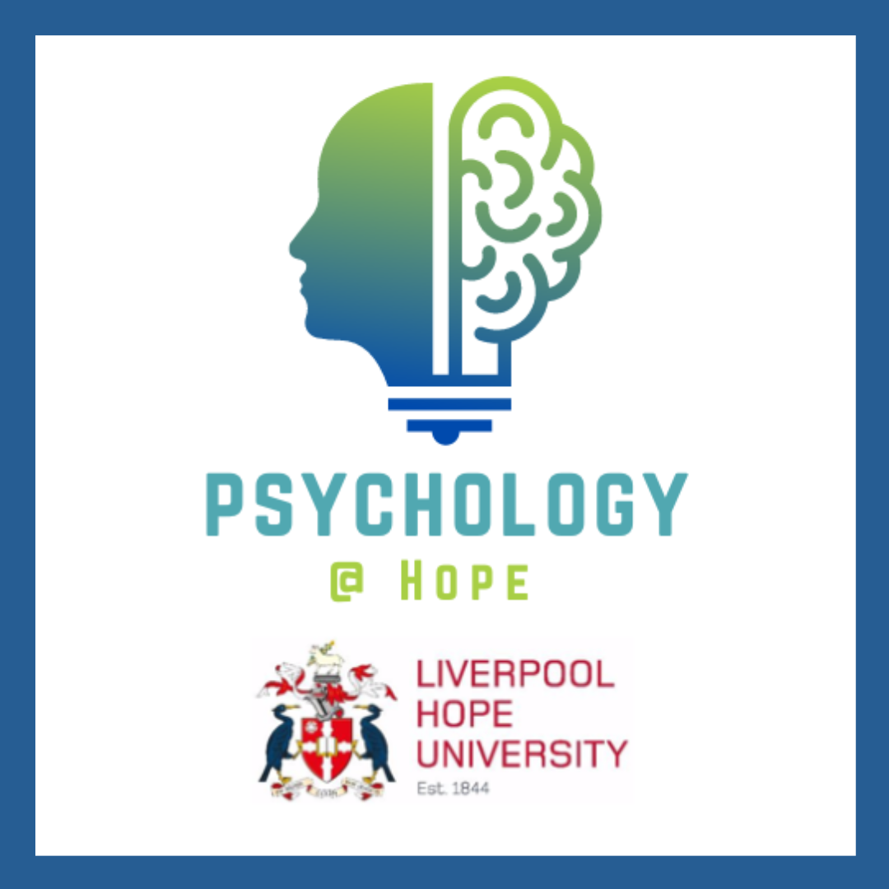

Critical skills are the skills that you will need to support you through university life and later employment. Attributes such as the ability to communicate effectively, collaborate with others, employ critical thinking and the ability to use technology.
Across the university sector and in the world of work there is an increased emphasis on the development of critical skills and competencies. In the above QR code we. gave you the Students’ Confidence in Key Skills questionnaire so that you could evaluate your own skills and competencies in the following critical skills.
In Bray, Byrne, and O’Kelly’s research (2020) they asked 1013 young adults to complete the scale. The minimum score is 1, and the maximum score is 5. If you score 1 or 2 on any of the components of the scale, this would indicate a lack of confidence in your ability for the related key skills We anticipate that most students will score reasonably similar to the averages shown in the table below. Some significant differences between male and female participants were observed, and they are also presented in the table below.
Table 1. Average scores of 1013 students on the Students’ Confidence in Key Skills scale from Bray, Byrne, & O’Kelly (2020)| Subscales | Overall Mean | Male | Female |
|---|---|---|---|
| Collaboration | 3.61 | * | * |
| Communication | 3.13 | 3.24 | 3.03 |
| Creativity | 3.51 | 3.55 | 3.48 |
| Self Direction | 3.50 | * | * |
| Critical Thinking | 3.44 | 3.51 | 3.37 |
| Technology for Learning | 3.77 | 3.84 | 3.32 |
We have built into our course assessment methods that can measure either directly or indirectly your performance on key skills as well as your knowledge and understanding of a topic. By embedding a variety of different assessment types into your degree program we aim to provide opportunities for you to develop your skills to a level that will enhance your studies and subsequent career prospects.
During your first year in Psychology at Hope we present a series of learning outcomes that you should achieve competency in by the end of the academic year.
Figure. 1. Year One Learning Outcomes for all Psychology students| Take responsibility for your own learning and planning, and identifying knowledge and skills gaps | Understand the scientific underpinnings of psychology as a discipline, its historical origins , development and limitations |
| Understand how knowledge is generated and applied in psychology | Work individually and as part of a group to engage in psychological research |
| Understand the scientific method, be able to identify issues for research, and select appropriate methodological and analytical techniques to address these issues | Demonstrate an awareness of ethical principles and approval procedures in relation to personal study. In particular with regard to research projects, and to be aware of ethical context of Psychology as a discipline |
| Communicate psychological knowledge accurately and reliably with structured and coherent arguments | |
| Appraise the complexity of theroretical perspectives that inform applications of psychological knowledge to real-life psychological issues in society | Demonstrate an understanding of how the global context influences psychological knowledge |
| Have a working knowledge of how specialised software can be used to generate experiments and collect data | Develop an understanding of the importance of reflexive practice |
In your first year, you may be assessed in several ways. These can include, but are not limited to:
| All Psychology Students (Joint Hons) | Single Honours Psychology Students (Additional Assessments) |
|---|---|
|
|
Each of the assessment types that we use can help you to meet the learning outcomes and develop these critical skills. For example verbal presentations will help you to develop your communication skills, group work will show that you can work collaboratively, essays and formal research reports will help you to expand your critical thinking, communication and creativity. All assessments will require self-direction and some form of technology for learning attributes. By embedding the critical skills into your assessments you will have many opportunities to expand and evolve your skill set
In completing the Critical Skills questionnaire you may have identified a gap in your skills? If you have, then you may want to try to develop your confidence in that particular area. For example, if you are not confident in using technology, you can consider doing some online tutorials. YouTube has a wealth of tutorials on using basic software such as Microsoft Word, Excel and PowerPoint. There are also many free MOOCs (Massive Open Online Courses) to help you to brush up on skills.
If you live in Merseyside there are many free courses to develop confidence and assertiveness, to manage anxiety, men’s mental health, at The Life Rooms, and many of the Life Rooms courses can be taken online too, all completely free.
It is important to remember that these critical skills can all be learned and developed. It is well worth investing a little of your time to give yourself the best opportunities for your studies, and your future.
Bray, A., Byrne, P., & O’Kelly, M. (2020). A short instrument for measuring students' confidence with ‘key skills': Development, validation and initial results. Thinking Skills and Creativity, 37, 100700.